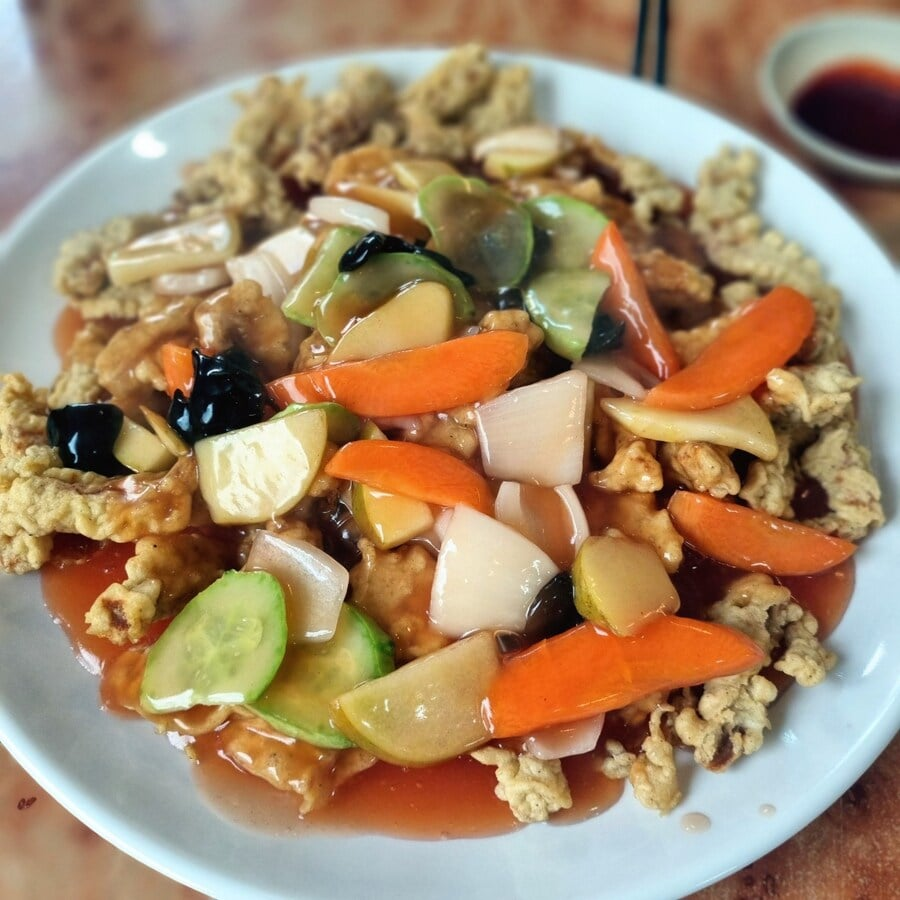
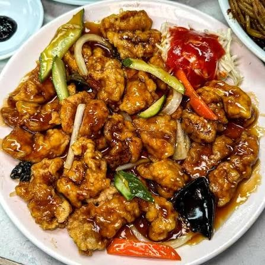
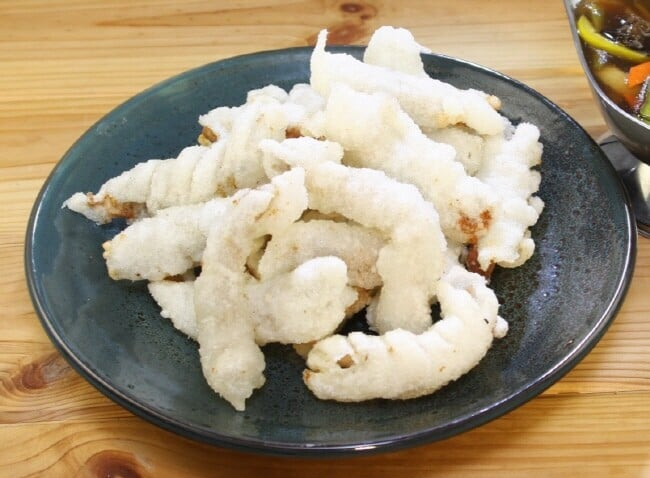

옛날 탕수육은 고기 조각이 작고 특유의 튀김옷에 소스도 그리 시지 않았음.
초간장에 고추가루 타서 찍어먹으면 맛있었음

언제부턴가 고기가 커지기 시작하더니 소스도 새콤함이 늘어남.
초간장 찍어먹기 애매해짐. 그래도 먹을만 했어.

시발 좆같은 하얀 탕수육. 식욕이 싹달아남.
찍먹충들 때문에 가게가도 소스를 따로 내옴.
찹쌀탕수육임지 꿔바로우인지 좆같은 거 들여온 놈들 싹다 감옥에 쳐넣고 소스 없는 탕수육만 먹여야함.
노랑이는 튀겨서 바로 먹는다는 조건이 있다면 괜찮은 듯?
딱딱해지는 순간 그냥 씨발 음쓰임